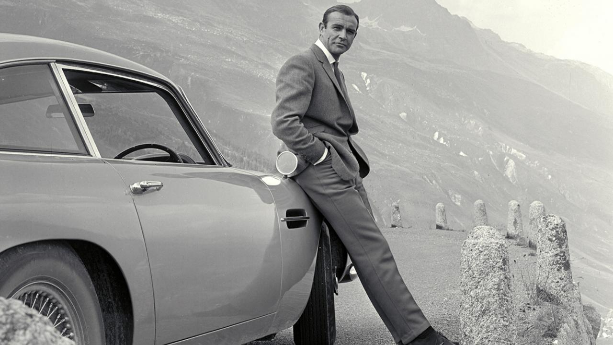

Plus récent
Daniel Craig, Pierce Brosnan, Timothy Dalton et George Lazenby ont salué la mémoire de leur camarade 007. Après le décès de Roger Moore en 2017, la saga James Bond vient de perdre son interprète original. Sean Connery est décédé ce week-end à l'âge de 90 ans et il ne reste plus que quatre 007 encore en vie. Et tous ceux qui ont incarné l'agent au service de sa Majesté, à un moment ou à un autre, n'ont pas manqué de saluer la mémoire de celui qui restera à jamais comme le premier des James Bond. L'actuel interprète du personnage imaginé par Ian Fleming, Daniel Craig, a publié un communiqué dans Variety, dans lequel il explique que Sean Connery a d'abord "représenté une ère et un style. L'esprit et le charme qu'il a incarnés à l'écran font péter les compteurs. Il a contribué à créer le blockbuster moderne. Il continuera à influencer les acteurs et les réalisateurs dans les années à venir." Le James Bond des années 1990-2000, Pierce Brosnan, a confié que l'acteur écossais était son "James Bond préféré lorsque j'étais enfant, et aussi lorsque j'ai incarné James Bond (...) Vous avez ouvert la voie pour nous tous, qui avons suivi votre chemin emblématique. Chaque homme à son tour vous a regardé avec révérence et admiration alors que nous forgions notre propre interprétation du rôle. Vous étiez puissant à tous les sens du terme, comme acteur et en tant qu'homme, et vous le resterez jusqu'à la fin des temps."